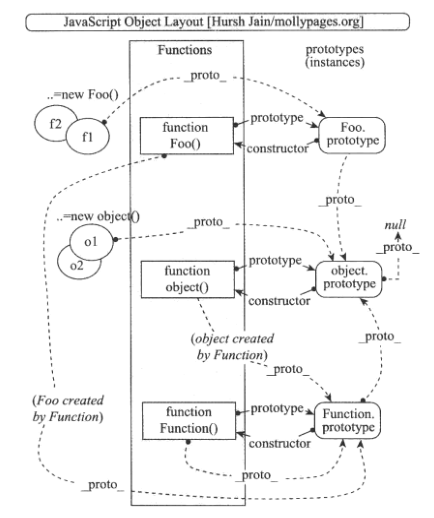

AngularJS巩固实践-49-常见“坑”-2-ngModel绑定值不更新
ng中$scope是视图（View）和模型（Model）之间的桥梁，是双向绑定机制的核心。
ngModel是ng用来处理表单（form）的最重要的指令，它链接了页面表单中的可交互元素和位于$scope之上的Model，它会自动表ngModel所指向的Model值渲染到form表单的可交互元素上，同时也会根据用户在form表单的输入或交互来更新此Model值。
在源码的实现中，Model的值的格式化，解析，验证都是由ngModel指令所对应的控制器ngModelController来实现的。
有的时候会遇到ngModel所绑定的值无法更新，对于这类问题，主要分两类：
- Model值不满足表单验证条件，所以ng不会渲染它
- 由于JS的原型链继承机制，对$scope中属性的赋值并不能更新到父$scope
验证引起的model值不显示问题
如下例,修改商品商量，要求输入1-100的自然数：1
2
3
4
5
6
7
8
9
10
11<body class="container" ng-app="com.ngnice.app">
<div ng-controller="DemoController as demo">
<div ng-form="form" class="form-horizontal">
<div class="form-group" ng-class="{'has-error': form.amount.$invalid}">
<label for="amount">Amount</label>
<!-- 此处会出问题 -->
<input id="amount" name="amount" type="number" ng-model="demo.amount" class="form-control" placeholder="1 - 100" min="1" max="100"/>
</div>
</div>
</div>
</body>
JS:1
2
3
4
5angular.module('com.ngnice.app', []).controller('DemoController', function(){
var vm = this;
vm.amount = 0;
return vm;
});
See the Pen 自定义表单元素 by XmoyKing (@xmoyking) on CodePen.
在上述代码中，ngModel变量amount赋值为0，理论上默认应该显示0，但却没有效果，只显示1-100的placeholder。
ngModel转换函数的源码实现如下：1
2
3
4
5
6
7
8
9
10
11
12
13
14
15
16
17
18
19
20
21
22
23
24
25
26
27
28
29
30
31
32
33
34
35
36
37
38
39
40
41
42
43
44
45var NUMBER_REGEXP = /^\s*(\-|\+)?(\d+|(\d*(\.\d*)))\s*$/;
function numberInputType(scope, element, attr, ctrl, $sniffer, $browser){
textInputType(scope, element, attr, ctrl, $sniffer, $browser);
ctrl.$parsers.push(function(value){
var empty = ctrl.$isEmpty(value);
if(empty || NUMBER_REGEXP.test(value)){
ctrl.$setValidity('number', true);
return value === '' ? null : (empty ? value : parseFloat(value));
}else{
ctrl.$setValidity('number', false);
return undefined;
}
});
addNativeHtml5Validators(ctrl, 'number', numberBadFlags, null, ctrl.$$validityState);
ctrl.$formatters.push(function(value){
return ctrl.$isEmpty(value) ? '' : '' + value;
});
if(attr.min){
var minValidator = function(value){
var min = parseFloat(attr.min);
return validate(ctrl, 'min', ctrl.$isEmpty(value) || value >= min, value);
};
ctrl.$parsers.push(minValidator);
ctrl.$formatters.push(minValidator);
}
if(attr.max){
var maxValidator = function(value){
var max = parseFloat(attr.max);
return validate(ctrl, 'max', ctrl.$isEmpty(value) || value <= max, value);
};
ctrl.$parsers.push(maxValidator);
ctrl.$formatters.push(maxValidator);
}
ctrl.$formatters.push(function(value){
return validate(ctrl, 'number', ctrl.$isEmpty(value) || isNumber(value), value);
});
}
ngModel作为ng双向绑定的重要组成部分，负责View控件交互数据到$scope上Model的同步。但此处的数据类型是有差异的，View上显示/输入的都是字符串类型，而在Model上的数据则有Number，Date，Array，Object等。
所以ngModel为了实现数据到Model的类型转换，在ngModelController中提供了两个管道数组$formatters和$parsers,分别是将Model的数据转换为View交互控件显示的值和将交互控件上得到的View值转换为Model数据，它们都是一个数组对象，在ngModel启动数据转换时，会以UNIX管道式传递执行这一系列的转换，ng允许手动添加转换函数到$formatters和$parsers中。
同时，此时也是做数据验证最佳时机，能够转换的就是合法的数据。在number组件中，依次添加了对数字验证转换、最小值、最大值的验证。首先会启动$parsers转换，若在转换过程中出现不合法数据，则会利用ngModelController.$setValidity来设置验证错误，并返回undefined。
对于Model数据到交互控件显示，同样也会经过$formatters的转换管道，同时也会利用ngModelController.$setValidity来设置验证错误，并返回undefined。因此不合法的数据不会显示在交互控件上。
所以上述例子，若添加了错误提示信息则会显示错误提示。
原型链继承问题
JS中每个对象都会链接到一个原型对象，并且它可以从原型链中继承属性，即使通过字面量创建的对象也会链接到Object.prototype,它是js中的标配默认对象。
js中的原型链继承相对于其他语言常见的继承，是一种另类的继承，它是实施于对象上的动态继承方式，而非常见的实施于类型Class上的静态继承体系，js这种继承方式非常灵活，一个对象可以被多个对象继承，而且它们都同时共享一个实例对象，但这种方式理解起来有时候会比较复杂。
js中，每个函数都有一个原型属性prototype指向自身的原型，而由这个函数创建的对象也有一个proto属性指向这个原型，而函数的原型是一个对象，所以这个对象也会有一个proto的属性指向自己的原型，这样逐层的深入直到Object对象的原型，这就是原型链。 JS原型继承和原型链示例图如下，从左向右看：

函数是由Function函数创建的对象，因此函数也有一个proto属性指向Function函数的原型。真正形成原型链的是每个对象的proto属性，而不是函数的prototype属性。关于原型继承和原型链，可以参考《JavaScript模式》。
js的原型链连接只在属性检索的时候才会启用，若尝试去获取对象的某个属性值，但若该对象没有此属性名，则js会试着从原型对象中获取该属性，依次类推上找，直到Object.prototype, 若最后还是没有，则返回undefined。
这种原型继承在更新属性时不会启用，因此对于基础类型（非引用对象上的属性，即没有.运算符）的属性更新时，它不能更新父对象上的属性，而是在自身对象上更新/创建该属性覆盖同名父属性，这就是ng中对于基础类型的属性不能在子Controller中被修改的原因，导致在子Controller中ngModel的更新并不hi反应在父Controller上。
示例如下：1
2
3
4
5
6
7
8
9
10
11
12
13
14<body class="container" ng-app="com.ngnice.app">
<div ng-controller="ParentController">
<h4>Parent Controller:</h4>
<pre>{{ greet | json }}</pre>
<input type="text" ng-model="greet" class="form-control" />
<div ng-controller="ChildController">
<div class="form-group">
<h4>Child Controller:</h4>
<pre>{{ greet | json }}</pre>
<input type="text" ng-model="greet" class="form-control" />
</div>
</div>
</div>
</body>
JS:1
2
3angular.module('com.ngnice.app',[]).controller('ParentController', function($scope){
$scope.greet = 'hello angular';
}).controller('ChildController', angular.noop);
See the Pen 自定义表单元素 by XmoyKing (@xmoyking) on CodePen.
初始化后，子$scope继承父$scope的greet属性，都显示为hello angular，若修改父Controller的input修改greet属性，则子Controller也会及时更新。因为ngController默认会使用原型链继承来自父对象的属性，所有的$scope都是来自ngApp节点创建的$rootScope，即所有$Scope都直接或间接继承$rootScope。
但当修改子Controller的输入框后，父Controller却不会更新，而且以后父Controller的修改不影响子Controller。原因就是两个Controller的greet属性独立了，各自拥有自己的greet属性。这个问题是由js原型链引起的，而不是ng的问题。
那么如何做到在子Controller中更新父Controller的属性呢。问题在于没有启用原型链的检索，所以若将ngModel的属性变为引用对象，那么js的原型链检索就会被启动，即在ngModel的属性中加入.即可解决问题。
在ngModel的属性值中引入vm变量，隐藏每次修改greet的值，都会触发整个页面的及时同步，这个问题其实可以通过controller as vm的语法来解决更好。
See the Pen 原型链继承问题-解决 by XmoyKing (@xmoyking) on CodePen.